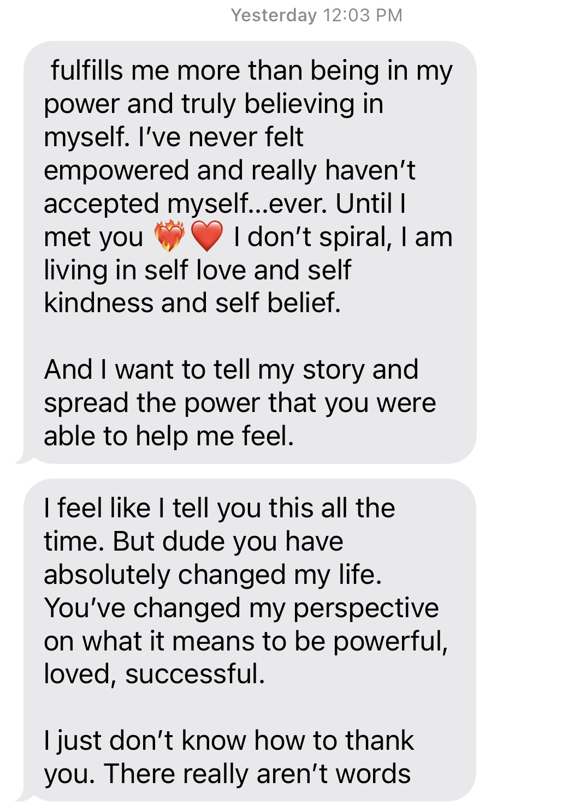
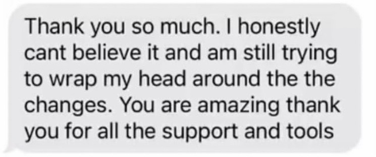
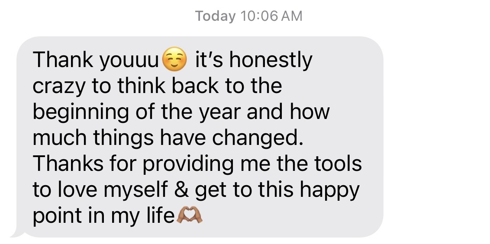

Coach • Facilitator • Speaker
How you show up changes everything.
In the conversations that shape your career.
In the moments that shape your relationships.
In the decisions that shape your life.

The way you show up in the moments that matter is shaped long before those moments arrive.
About Chelsea
Different settings. Same work.
I've spent my career helping people navigate the moments that ask the most of them.
Sometimes that has looked like coaching individuals through major transitions. Sometimes it has meant facilitating conversations inside organizations, leading global teams, or standing in front of a room and helping people see something differently.
Across every chapter, I've kept coming back to the same thing: how we show up matters. My work lives at the intersection of confidence, communication, self-trust, emotional awareness, and practical action.
I'm a Certified Life Coach with more than a decade of experience in sales leadership, facilitation, and people development. What matters most to me is making insight usable, helping people understand themselves more clearly, communicate more honestly, and move through important moments with intention.
Client Stories
Real voices.
Real change.
A compilation of reflections from people I've worked with over the years.



“When we first began, my fear brought me to tears, but as our sessions went on, the growth did.”
“My advice: don't wait. Don't wait another second to work with Chelsea. She helped me uncover and strengthen my relationship with myself in so many ways.”
“Over the last couple months, I have seen myself grow in so many different ways: confidence in myself, compassion for myself, and the freedom to love myself more than I think I ever have.”
Speaking & Facilitation
Ideas people can actually use.
I speak and facilitate on confidence, communication, self-advocacy, leadership, emotional regulation, and how we show up in the moments that matter.
My style is practical, thoughtful, interactive, and grounded in real behavior change. The goal is not just to leave people inspired. It is to leave them with language, perspective, and tools they can use immediately.


Get in touch
Want to start a conversation?
For speaking, facilitation, podcast, collaboration, or other inquiries, send me a note and tell me what you have in mind.
chelsea@chelsealuther.com ↗